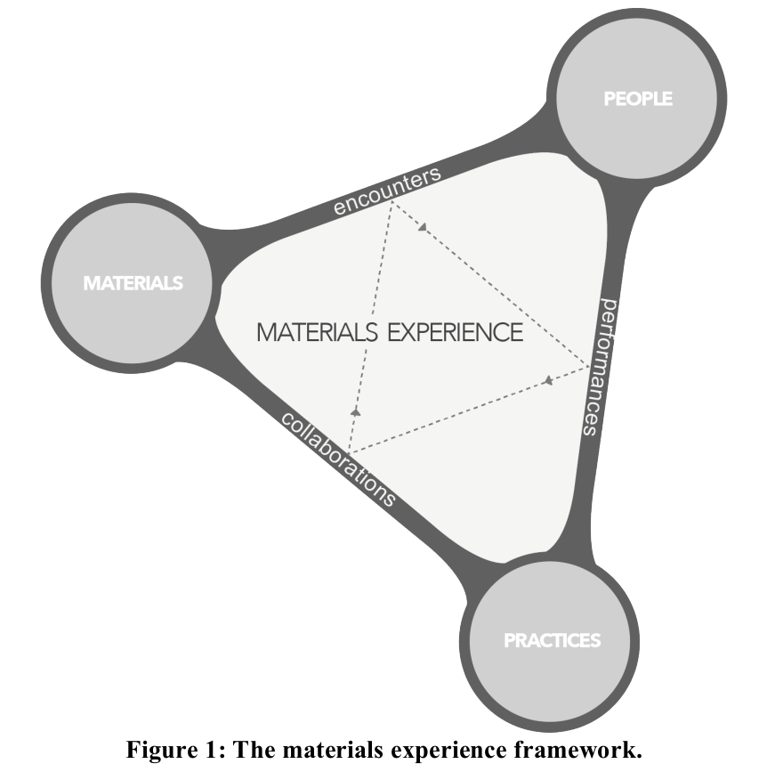

Expressive interaction with physical-digital objects

by Elisa Giaccardi and Elvin KaranaWooden mirror (1999) by Daniel RozinFRANK (2018) by Davide Amorim, Giulia Caleca, Minerva Loos and Alex de RuiterThrowable Panoramic Ball Camera (2011) by Jonas Pfeil, Kristian Hildebrand, Carsten Gremzow, Bernd Bickel, Marc AlexaSoft lamp (2013) by Simon Frambach
A few questions on expressive interaction
Are representations meaningful and of long-lasting importance?
Can users think and talk with or through objects, using them as props to act with? Do they give discussions a focus and provide a record of decisions?
Is there a clear link between what you do and what happens? Are physical and digital representations seemingly naturally coupled?